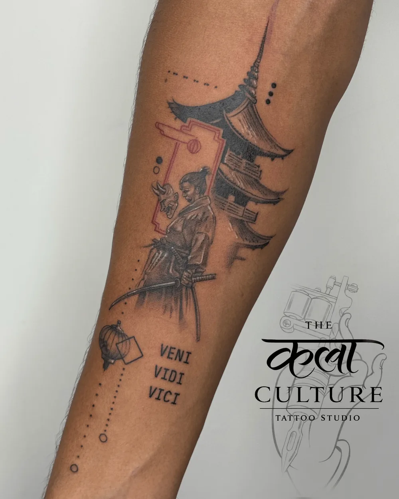
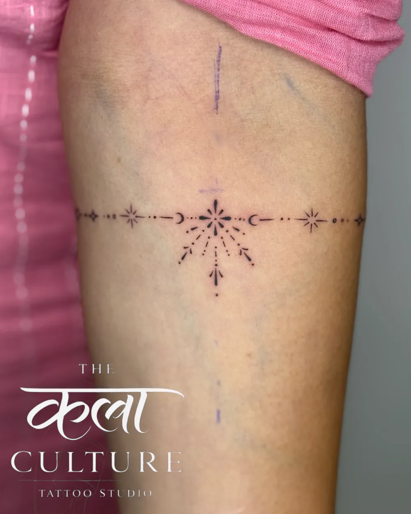
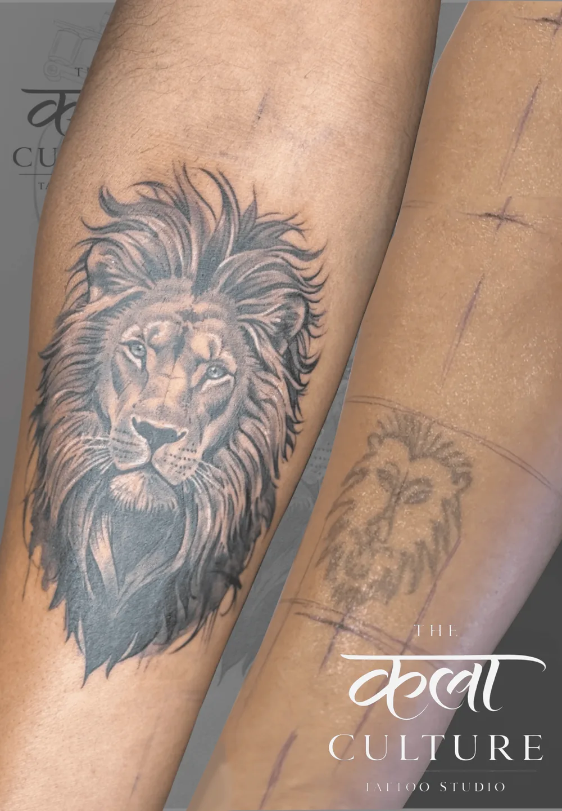

Custom Designs
Unique tattoos designed specifically for you — one of one, never repeated.
View Gallery →Best Tattoo Studio in Vadodara.
Premium tattoos with precision & artistry — custom designs, realism, fine line, portraits and cover-ups, done in a fully hygienic studio.
Tap any category to view the full photo gallery.

Unique tattoos designed specifically for you — one of one, never repeated.
View Gallery →
Hyper-realistic portraits and detailed artwork with depth and contrast.
View Gallery →
Delicate, elegant minimalist designs with ultra-crisp needlework.
View Gallery →
Complete full or half sleeve masterpieces designed around your arm flow.
View Gallery →
Cover your old tattoo with a masterpiece — seamless redesigns.
View Gallery →
Couple and friendship designs that complement each other perfectly.
View Gallery →Filter by style — every photo is actual work done at our Vadodara studio. Tap any photo to view it larger.
A premium tattoo starts with a safe environment. Our hygiene routine is built into every appointment — from setup and sterilization to the final aftercare wrap.
Fresh, sterile, single-use needles are opened in front of every client and safely disposed of after the session.
Reusable equipment goes through a strict cleaning and sterilization routine before it ever touches your skin.
High-touch surfaces and work areas are disinfected with medical-grade barrier film between clients.
Artists use fresh nitrile gloves and replace them whenever the workflow requires it.
Every appointment begins in a controlled, organized studio designed around safety and comfort.
We finish with proper wrapping and clear aftercare guidance so your tattoo heals the right way.
Hygiene isn't a promise we put on a poster. It's a standard we follow before, during and after every tattoo.

Our founding artist Jaimin brings 8+ years of dedicated craft to The Kala Culture Tattoos — specialising in realism, fine line work, and fully custom spiritual and cover-up designs.
Every piece starts with a conversation and ends with a story worth wearing.
A few pieces we're proud of — scroll to explore.
← Swipe to explore client stories →
"I recently got a sleeve tattoo done at Kala Culture and I couldn't be happier. The artist was incredibly professional and took the time to understand my vision. The atmosphere was welcoming and clean."
"I had an amazing experience! The artist was professional, patient, and incredibly talented. The tattoo turned out even better than I imagined, with great attention to detail and excellent hygiene."
"Had an amazing experience! The artist was a total pro and the tattoo came out even better than I imagined. The studio felt super welcoming and homely — definitely a place you'd want to hang out."
"It was one of the best experiences I ever had for a tattoo! The staff, the patience and the hygiene level was really great. Love it, would love to visit again."
"The artist Jaimin bhai was very professional, patient, and made sure I was comfortable throughout. Hygiene standards were properly maintained — all equipment clean and sanitized."
"Absolutely loved the experience! The artist perfectly understood my idea behind 'PERSPECTIVE' and turned it into something even better than I imagined. So clean and meaningful."
From the first conversation to the finished tattoo, every step is planned around you.
Tell us your idea, placement, size and style — free consultation, no pressure.
We refine a custom design with you and prepare it perfectly for your skin.
Your tattoo is created with professional, fully hygienic equipment.
Get clear aftercare guidance for a smooth, clean healing process.
Build your tattooing foundation with practical, one-on-one guidance from experienced artists. Learn how to turn ideas into clean, confident tattoos.
Comprehensive apprentice courses covering fundamentals, machine mechanics, color blending and live skin experience.
Everything you might want to ask before getting inked.
Pricing starts at ₹399 per square inch for standard designs. Custom designs, intricate realism portraits and full sleeves are priced on size, detail and session time. We give 100% transparent pricing with a free design consultation before we start.
8+ years of dedicated craft, 2000+ satisfied clients, a 5.0-star Google rating and strict sterilization protocols — 100% single-use needles, autoclaved equipment and premium imported inks.
Pain varies by placement, but our artists use modern lightweight rotary machines, smooth hand techniques and ergonomic positioning to keep you comfortable. We guide your breathing and take breaks whenever you need.
Fresh single-use sealed needles opened in front of you, medical-grade barrier film on all surfaces, fresh nitrile gloves replaced frequently, and hospital-grade sterilization for all reusable equipment.
Yes — we specialise in custom cover-ups. Our artist studies the dark tones and placement of your existing tattoo and designs a new concept that conceals the old ink completely, without looking muddy.
Keep the wrap on for the initial hours, wash gently with mild antibacterial fragrance-free soap, pat dry with a clean paper towel, and apply our recommended ointment in a thin layer twice daily. Avoid direct sunlight, swimming and picking during the 2-week healing phase.
We welcome walk-ins based on daily availability, but we strongly recommend booking ahead on WhatsApp (+91 9157714414) — especially for custom artwork, portraits and large sessions.
Yes! Our Tattoo Training Academy offers one-on-one apprentice courses covering fundamentals, machine mechanics, linework, shading, color blending, clinical hygiene and live skin practice. 15+ artists trained so far.
Walk in or book your free consultation — we reply fast on WhatsApp.
102, Neelkanth Gold Complex,
Vasna-Bhayli Rd, Vadodara, Gujarat 390021
Mon – Sun: 10:00 AM – 8:00 PM
₹399 – ₹25,000 · Free consultation